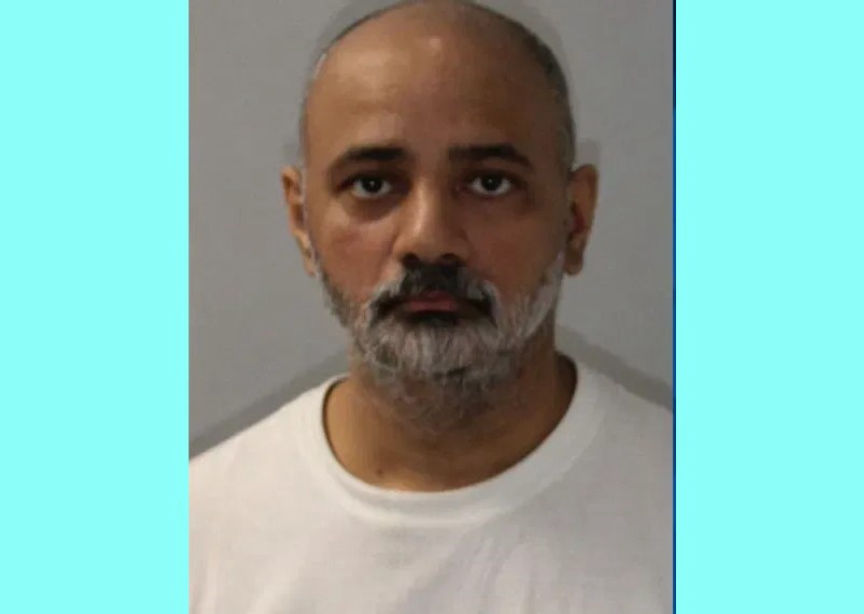
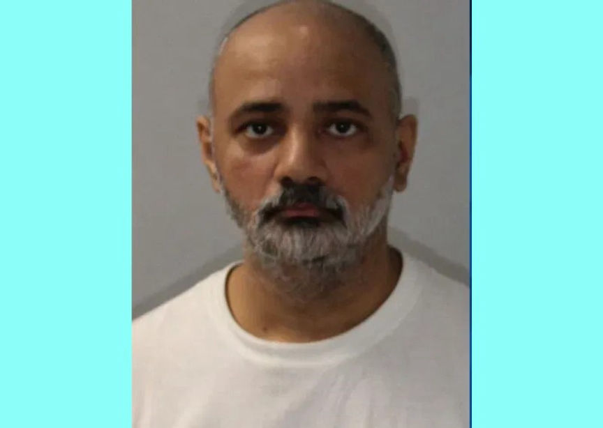

International Drugs Vendor "Liston" Forfeits 8,100 Bitcoin
~2 min read | Published on 2024-01-27, tagged Darkweb-Vendor, Extradited, Forfeits, Pleaded-Guilty using 437 words.
An Indian man agreed to forfeit more than 8,100 bitcoin after admitting he led an international dark web drug trafficking ring that distributed kilos of a variety of drugs.

According to court documents, from at least mid-2012 through July 2017, Banmeet Singh, 40, of India, used vendor names such as "Listonishere" and "Liston" on multiple dark web markets including, Silk Road, AlphaBay, and Hansa, to distribute large quantities of MDMA, LSD, ecstasy, Xanax, Ketamine, and Tramadol.
Singh operated from the UK and had distributors in the US. Investigations by the DEA identified eight distribution rings used by Singh. Sigh shipped drugs to individuals in these rings and later gave them instructions on where to mail the drugs according to orders he received on his vendor accounts. Sigh paid the re-shippers through PayPal, cash in the mail, or crypto.
In January 2017, the DEA identified one of Sigh's re-shippers, Amanda Trull. Investigations revealed that from October 2015 to December 2016, Trull had mailed over 4,200 packages to 2,500 different addresses in the US, Canada, Jamaica, and Ireland.
A search warrant executed at Trull's residence resulted in the seizure of 59 kilograms of MDMA, 14 kilograms of Ketamine, and other drugs.
On being questioned, Trull told the investigators she had been receiving the drugs from someone she knew as Liston. She said she communicated with Liston via Wickr and email. She also admitted she knew Liston was a dark web drugs vendor.
Further investigations led to the identification of multiple Gmail accounts used by Sigh to communicate with the reshippers. the emails included [email protected], [email protected], [email protected] and [email protected].
In the UK, the NCA established that Sigh operated several pharmaceutical businesses in the UK. Their surveillance revealed he did not lead an extravagant lifestyle. The investigators executed a search warrant at his residence in April 2019. The search resulted in the discovery of cold storage wallets and seed phrases for multiple wallets. The seized crypto resulted in the largest single cryptocurrency seizure in DEA history.
Sigh was extradited to the US in March 2023 following multiple failed appeals.
On January 26, 2024, Singh pleaded guilty to conspiracy to possess with the intent to distribute controlled substances and conspiracy to commit money laundering.
In his plea agreement, Sigh agreed to forfeit the crypto found in his possession, currently worth over $330 million. He also agreed to a sentence of eight years in prison. His sentencing date has not been set.

Banmeet Singh
According to court documents, from at least mid-2012 through July 2017, Banmeet Singh, 40, of India, used vendor names such as "Listonishere" and "Liston" on multiple dark web markets including, Silk Road, AlphaBay, and Hansa, to distribute large quantities of MDMA, LSD, ecstasy, Xanax, Ketamine, and Tramadol.
Singh operated from the UK and had distributors in the US. Investigations by the DEA identified eight distribution rings used by Singh. Sigh shipped drugs to individuals in these rings and later gave them instructions on where to mail the drugs according to orders he received on his vendor accounts. Sigh paid the re-shippers through PayPal, cash in the mail, or crypto.
In January 2017, the DEA identified one of Sigh's re-shippers, Amanda Trull. Investigations revealed that from October 2015 to December 2016, Trull had mailed over 4,200 packages to 2,500 different addresses in the US, Canada, Jamaica, and Ireland.
A search warrant executed at Trull's residence resulted in the seizure of 59 kilograms of MDMA, 14 kilograms of Ketamine, and other drugs.
On being questioned, Trull told the investigators she had been receiving the drugs from someone she knew as Liston. She said she communicated with Liston via Wickr and email. She also admitted she knew Liston was a dark web drugs vendor.
Further investigations led to the identification of multiple Gmail accounts used by Sigh to communicate with the reshippers. the emails included [email protected], [email protected], [email protected] and [email protected].
In the UK, the NCA established that Sigh operated several pharmaceutical businesses in the UK. Their surveillance revealed he did not lead an extravagant lifestyle. The investigators executed a search warrant at his residence in April 2019. The search resulted in the discovery of cold storage wallets and seed phrases for multiple wallets. The seized crypto resulted in the largest single cryptocurrency seizure in DEA history.
Sigh was extradited to the US in March 2023 following multiple failed appeals.
On January 26, 2024, Singh pleaded guilty to conspiracy to possess with the intent to distribute controlled substances and conspiracy to commit money laundering.
Quote:U.S. Attorney Kenneth L. Parker
In the Singh organization’s drug orders, the members frequently used the vendor name "Liston" and signed off with the signature phrase, "I’m still dancing." Today, with Banmeet Singh’s plea of guilty, the dance is over
In his plea agreement, Sigh agreed to forfeit the crypto found in his possession, currently worth over $330 million. He also agreed to a sentence of eight years in prison. His sentencing date has not been set.